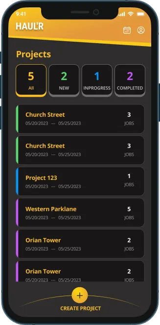

Haulr Corp · United States
Haulr
Construction logistics for the US market — connecting contractors with truck drivers, and tracking every load in real time.

The problem
Construction companies move enormous volumes of material, and the coordination between the site that needs it and the drivers hauling it has traditionally happened over phone calls and text messages. That works until it does not: a driver goes to the wrong site, a load is counted twice, an invoice is disputed three weeks later and nobody can prove what happened.
Haulr Corp wanted a single system where the job, the driver, the route and the invoice were all the same record.
What we built
A permission model that matches the industry
This was the architectural decision everything else depended on. Contractors, dispatchers and drivers see genuinely different applications built from the same codebase — a driver needs their next job and a route; a dispatcher needs the whole fleet; a contractor needs cost and progress. Getting that multi-tier structure right early is what made the rest tractable.
Real-time tracking
Live GPS tracking of every vehicle, built to survive the conditions it actually runs in: patchy rural coverage, phones in cradles in direct sun, drivers who are not going to babysit an app. Location updates batch and reconcile rather than assuming a clean connection.
Jobs and invoicing
Project and job creation, driver assignment, and invoice management flowing from the same records — so the invoice is generated from what was actually tracked, not re-entered by hand afterwards.
Working across time zones
This is a US business served from India, and that shapes the engineering as much as the requirements do. The work is structured so that progress does not depend on real-time availability: clear written handoffs, decisions documented rather than discussed, and enough autonomy to keep moving when the client is asleep.
Miguel Brizuela, Haulr Corp's founder, put it as being "an invaluable asset as one of our lead developers" — the word lead is the one that matters there. Offshore does not have to mean order-taking.
- Fleet tracking
- Real-time
- User architecture
- Multi-tier
- Invoicing
- End-to-end
- Engagement
- 3+ years